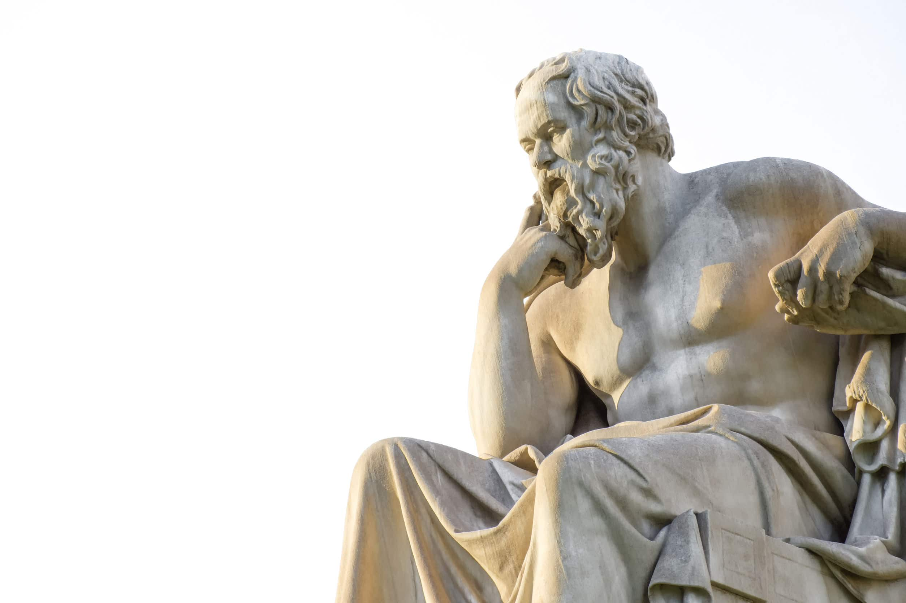

Bem-vindo ao Mundo da História da Filosofia
A filosofia, nascida da curiosidade e do espanto diante do mundo, é uma jornada intelectual que busca compreender a natureza da realidade, do conhecimento, da moral e da existência humana.
Desde seus primórdios na Grécia Antiga, ela nos convida a questionar, refletir e criticar, impulsionando o desenvolvimento do pensamento e da cultura.
Neste site, embarcaremos em uma viagem fascinante pela história da filosofia, explorando as ideias de grandes pensadores que moldaram nossa visão de mundo ao longo dos séculos. Desvendaremos os mistérios do universo com os pré-socráticos, mergulharemos na busca pelo conhecimento com Sócrates e Platão, questionamos a ética com Aristóteles, navegaremos pelos céus com Santo Tomás de Aquino, desbravamos a modernidade com Descartes e questionamos as estruturas de poder com Nietzsche.
Para saber mais sobre os grandes pensadores, clique aqui.
Neste site, embarcaremos em uma viagem fascinante pela história da filosofia, explorando as ideias de grandes pensadores que moldaram nossa visão de mundo ao longo dos séculos. Desvendaremos os mistérios do universo com os pré-socráticos, mergulharemos na busca pelo conhecimento com Sócrates e Platão, questionamos a ética com Aristóteles, navegaremos pelos céus com Santo Tomás de Aquino, desbravamos a modernidade com Descartes e questionamos as estruturas de poder com Nietzsche.
Para saber mais sobre os grandes pensadores, clique aqui.
Prepare-se para questionar, refletir e desafiar suas crenças enquanto exploramos juntos os caminhos tortuosos e iluminadores da história do pensamento humano. A filosofia te espera!
